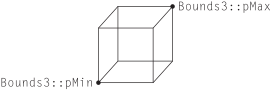
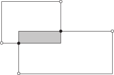
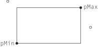

3.7 边界框（Bounding Boxes）
系统的许多部分都在轴对齐的空间区域（axis-aligned regions of space）上运行。例如， pbrt 中的多线程是通过将图像细分为可以独立处理的 2D 矩形瓦片来实现的，而第 7.3 节中的包围体层次结构使用 3D 框来包围场景中的几何原件。 Bounds2 和 Bounds3 模板类用于表示这类区域的范围（extent）。两者都由一个用于表示它们范围的坐标的类型 T 来参数化。与之前的向量数学类型一样，我们在这里将重点放在 3D 变体 Bounds3 上，因为 Bounds2 实际上是它的一个子集。
/** Bounds2 定义 */
template <typename T>
class Bounds2 {
public:
/** Bounds2 公有方法 */
/** Bounds2 公有成员 */
};
/** Bounds3 定义 */
template <typename T>
class Bounds3 {
public:
/** Bounds3 公有方法 */
/** Bounds3 公有成员 */
};
我们使用与之前相同的简写来定义常用边界类型的名称。
/** Bounds[23][fi] 定义 */
using Bounds2f = Bounds2<Float>;
using Bounds2i = Bounds2<int>;
using Bounds3f = Bounds3<Float>;
using Bounds3i = Bounds3<int>;
这类边界框有几种可能的表示方式； pbrt 使用 轴对齐边界框（axis-aligned bounding boxes）（AABBs）（AABB包围盒），其中框的边相互垂直并与坐标轴对齐。另一种可能的选择是 定向边界框（oriented bounding boxes）（OBBs）（OBB包围盒），其中框的不同侧的边仍然相互垂直，但不一定与坐标系对齐。一个 3D AABB 可以通过它的一个顶点和三条边的长度来描述，每个长度表示沿 \( x \) 、 \( y \) 和 \( z \) 轴的距离跨度。或者，框的两个对角顶点也可以描述它。我们为 pbrt 的 Bounds2 和 Bounds3 类选择了两点表示法；它们存储具有最小坐标值和最大坐标值的顶点的位置。图 3.9 显示了边界框的 2D 插图及其表示。
/** Bounds3 公有成员 */
Point3<T> pMin, pMax;
图 3.9：轴对齐边界框（AABB）。 Bounds2 和 Bounds3 类仅存储框的最小和最大点的坐标；边界框的其他角在此表示中是隐式的。
默认构造函数通过将范围设置为无效配置（违反不变量 pMin.x <= pMax.x，其他维度类似）来创建一个空框。通过用可表示的最大和最小数字初始化两个角点，任何涉及空框的操作（例如 Union() ）都将产生正确的结果。
/** Bounds3 公有方法 */
Bounds3() {
T minNum = std::numeric_limits<T>::lowest();
T maxNum = std::numeric_limits<T>::max();
pMin = Point3<T>(maxNum, maxNum, maxNum);
pMax = Point3<T>(minNum, minNum, minNum);
}
初始化仅包含一个点的边界也是很有用的：
/** Bounds3 公有方法 */
explicit Bounds3(Point3<T> p) : pMin(p), pMax(p) {}
如果调用者传递两个角点（ p1 和 p2 ）来定义框，构造函数需要找到它们的分量最小值和最大值，因为不一定是 p1.x <= p2.x ，等等。
/** Bounds3 公有方法 */
Bounds3(Point3<T> p1, Point3<T> p2)
: pMin(Min(p1, p2)), pMax(Max(p1, p2)) {}
使用数组索引选择框的两个角点中的一个是很有用的。调试版本中的断言（此处未显示）检查提供的索引是否为 0 或 1。
/** Bounds3 公有方法 */
Point3<T> operator[](int i) const { return (i == 0) ? pMin : pMax; }
Point3<T> &operator[](int i) { return (i == 0) ? pMin : pMax; }
Corner() 方法返回边界框八个角之一的坐标。其逻辑调用 operator[] 方法，针对每个维度使用基于 corner 的低三位中的零或一值，然后提取相应的分量。如果你觉得不够显而易见，那么通过传入 0 到 7 来验证该方法返回的所有八个角的位置是值得的。
给定一个边界框和一个点， Union() 函数返回一个包围该点和原始边界的新边界框。
/** Bounds3 内联函数 */
template <typename T>
Bounds3<T> Union(const Bounds3<T> &b, Point3<T> p) {
Bounds3<T> ret;
ret.pMin = Min(b.pMin, p);
ret.pMax = Max(b.pMax, p);
return ret;
}
一个在这和后续某些函数中应用的细节是，有必要在函数中直接设置 ret 的成员变量 pMin 和 pMax，而不是将 Min() 和 Max() 的返回值传给 Bounds3 构造函数。这个细节源于这样一个事实：如果提供的边界都是退化的（degenerate），那么返回的边界也应该是退化的。如果将退化的范围传递给构造函数，则它会对坐标值进行排序，这最终会导致一个无限的边界。
同样可以构造一个新的边界框，来包围由两个其他边界框所包含的空间。该函数的定义类似于之前的 Union() 方法，该方法接受一个 Point3f ；不同之处在于第二个框的 pMin 和 pMax 被用于 Min() 和 Max() 测试。
/** Bounds3 内联函数 */
template <typename T>
Bounds3<T> Union(const Bounds3<T> &b1, const Bounds3<T> &b2) {
Bounds3<T> ret;
ret.pMin = Min(b1.pMin, b2.pMin);
ret.pMax = Max(b1.pMax, b2.pMax);
return ret;
}
两个边界框的交集可以通过计算它们各自最小坐标的最大值和最大坐标的最小值来找到。（见图 3.10。）
图 3.10：两个边界框的交集。 给定两个边界框， pMin 和 pMax 点用空心圆表示，它们交集区域的边界框（阴影区域）具有一个最小点（左下角填充圆）其坐标由两个框在每个维度的最小点坐标的最大值给出。同样，它的最大点（右上角填充圆）由两个框的最大坐标的最小值给出。
/** Bounds3 内联函数 */
template <typename T>
Bounds3<T> Intersect(const Bounds3<T> &b1, const Bounds3<T> &b2) {
Bounds3<T> b;
b.pMin = Max(b1.pMin, b2.pMin);
b.pMax = Min(b1.pMax, b2.pMax);
return b;
}
我们还可以通过观察两个边界框在 \( x \) 、 \( y \) 和 \( z\ ) 中的范围是否重叠来判断它们是否重叠：
/** Bounds3 内联函数 */
template <typename T>
bool Overlaps(const Bounds3<T> &b1, const Bounds3<T> &b2) {
bool x = (b1.pMax.x >= b2.pMin.x) && (b1.pMin.x <= b2.pMax.x);
bool y = (b1.pMax.y >= b2.pMin.y) && (b1.pMin.y <= b2.pMax.y);
bool z = (b1.pMax.z >= b2.pMin.z) && (b1.pMin.z <= b2.pMax.z);
return (x && y && z);
}
三个一维包含（containment）测试判断给定点是否在边界框内。
/** Bounds3 内联函数 */
template <typename T>
bool Inside(Point3<T> p, const Bounds3<T> &b) {
return (p.x >= b.pMin.x && p.x <= b.pMax.x &&
p.y >= b.pMin.y && p.y <= b.pMax.y &&
p.z >= b.pMin.z && p.z <= b.pMax.z);
}
Inside() 的 InsideExclusive() 变体不将上边界上的点视为在边界内。它主要适用于整数类型的边界。
/** Bounds3 内联函数 */
template <typename T>
bool InsideExclusive(Point3<T> p, const Bounds3<T> &b) {
return (p.x >= b.pMin.x && p.x < b.pMax.x &&
p.y >= b.pMin.y && p.y < b.pMax.y &&
p.z >= b.pMin.z && p.z < b.pMax.z);
}
DistanceSquared() 返回一个点到边界框的平方距离，如果该点在框内，则返回零。计算的几何设置如图 3.11 所示。在每个维度中计算点到框的距离后，通过将每个一维距离的平方相加来找到平方距离。
图 3.11：计算点到轴对齐边界框（AABB）的平方距离。 首先，我们在每个维度上找到点到框的距离。这里，左上角的空心圆表示的点位于框的左上方，因此其 \( x \) 和 \( y \) 距离分别为 pMin.x - p.x 和 pMin.y - p.y 。另一个空心圆表示的点位于框的右侧，但在 \( y \) 维度上与框重叠，距离分别为 p.x - pMax.x 和零。 Bounds3::DistanceSquared() 中的逻辑是通过找到零与每个维度中最小和最大点的距离中的最大值来计算这些距离。
/** Bounds3 内联函数 */
template <typename T, typename U>
auto DistanceSquared(Point3<T> p, const Bounds3<U> &b) {
using TDist = decltype(T{} - U{});
TDist dx = std::max<TDist>({0, b.pMin.x - p.x, p.x - b.pMax.x});
TDist dy = std::max<TDist>({0, b.pMin.y - p.y, p.y - b.pMax.y});
TDist dz = std::max<TDist>({0, b.pMin.z - p.z, p.z - b.pMax.z});
return Sqr(dx) + Sqr(dy) + Sqr(dz);
}
从一个点到边界框的距离计算很简单，尽管需要间接使用 TupleLength 来判断正确的返回类型。
/** Bounds3 内联函数 */
template <typename T, typename U>
auto Distance(Point3<T> p, const Bounds3<U> &b) {
auto dist2 = DistanceSquared(p, b);
using TDist = typename TupleLength<decltype(dist2)>::type;
return std::sqrt(TDist(dist2));
}
Expand() 函数在所有维度上以一个常数因子扩大边界框。
/** Bounds3 内联函数 */
template <typename T, typename U>
Bounds3<T> Expand(const Bounds3<T> &b, U delta) {
Bounds3<T> ret;
ret.pMin = b.pMin - Vector3<T>(delta, delta, delta);
ret.pMax = b.pMax + Vector3<T>(delta, delta, delta);
return ret;
}
Diagonal() 返回边界框对角线上从最小点指向最大点的向量。
/** Bounds3 公有方法 */
Vector3<T> Diagonal() const { return pMax - pMin; }
计算框六个面的表面积和内部体积的方法也很有用。（这是 Bounds2 和 Bounds3 有区别的地方：这些方法在 Bounds2 中不可用，尽管它确实有一个 Area() 方法。）
/** Bounds3 公有方法 */
T SurfaceArea() const {
Vector3<T> d = Diagonal();
return 2 * (d.x * d.y + d.x * d.z + d.y * d.z);
}
/** Bounds3 公有方法 */
T Volume() const {
Vector3<T> d = Diagonal();
return d.x * d.y * d.z;
}
Bounds3::MaxDimension() 方法返回三个轴中最长的轴的索引。这在例如构建某些光线相交加速结构时，决定要细分哪个轴时是非常有用的。
/** Bounds3 公有方法 */
int MaxDimension() const {
Vector3<T> d = Diagonal();
if (d.x > d.y && d.x > d.z) return 0;
else if (d.y > d.z) return 1;
else return 2;
}
Lerp() 通过给定在各维度上的量值来在框的各个角之间线性插值。
/** Bounds3 公有方法 */
Point3f Lerp(Point3f t) const {
return Point3f(pbrt::Lerp(t.x, pMin.x, pMax.x),
pbrt::Lerp(t.y, pMin.y, pMax.y),
pbrt::Lerp(t.z, pMin.z, pMax.z));
}
Offset() 实际上是 Lerp() 的反向操作。它返回一个点相对于框角的连续位置，其中位于最小角落的点具有偏移 \( (0,0,0) \) ，位于最大角落的点具有偏移 \( (1,1,1) \) ，依此类推。
/** Bounds3 公有方法 */
Vector3f Offset(Point3f p) const {
Vector3f o = p - pMin;
if (pMax.x > pMin.x) o.x /= pMax.x - pMin.x;
if (pMax.y > pMin.y) o.y /= pMax.y - pMin.y;
if (pMax.z > pMin.z) o.z /= pMax.z - pMin.z;
return o;
}
Bounds3 还提供了一种方法，返回包围边界框的球体的中心和半径。一般来说，这可能比直接包围 Bounds3 原始内容的球体适配得松散的多，但对于某些几何操作，使用球体比使用框体更容易，在这种情况下，较差的适配可能是一个可接受的权衡。
/** Bounds3 公有方法 */
void BoundingSphere(Point3<T> *center, Float *radius) const {
*center = (pMin + pMax) / 2;
*radius = Inside(*center, *this) ? Distance(*center, pMax) : 0;
}
下面两个直白的方法测试空的（empty）和退化的（degenerate）边界框。请注意，“空”意味着边界框的体积为零，但并不一定意味着它的表面积为零。
/** Bounds3 公有方法 */
bool IsEmpty() const {
return pMin.x >= pMax.x || pMin.y >= pMax.y || pMin.z >= pMax.z;
}
bool IsDegenerate() const {
return pMin.x > pMax.x || pMin.y > pMax.y || pMin.z > pMax.z;
}
最后，对于整数边界，有一个迭代器类满足 C++ 前向迭代器的要求（即，它只能向前推进）。细节稍显繁琐且不那么有趣，因此书中未包含代码。拥有这个定义使得可以编写使用基于范围的 for 循环来迭代边界框中的整数坐标的代码：
Bounds2i b = ...;
for (Point2i p : b) {
// …
}
根据实现，迭代会达到但不访问每个维度的最大范围的点。